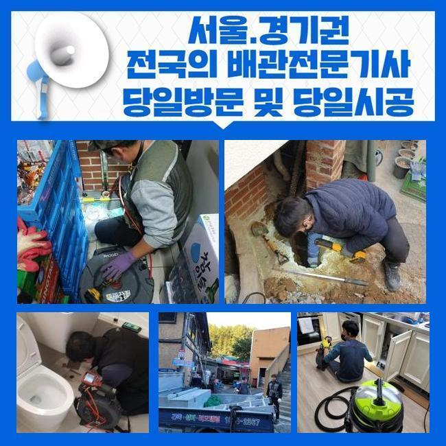
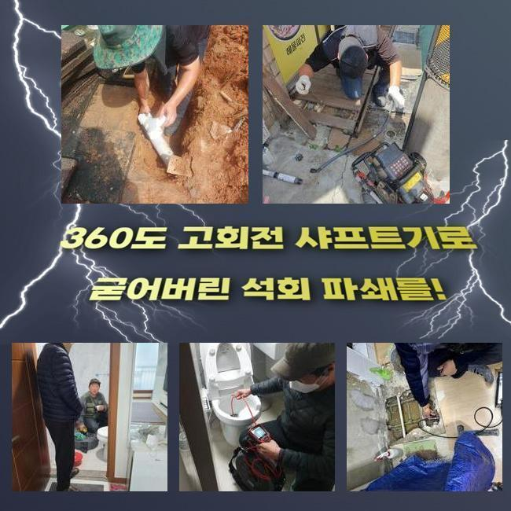
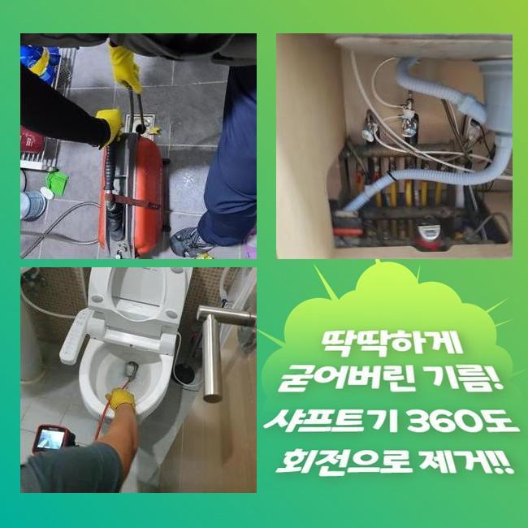
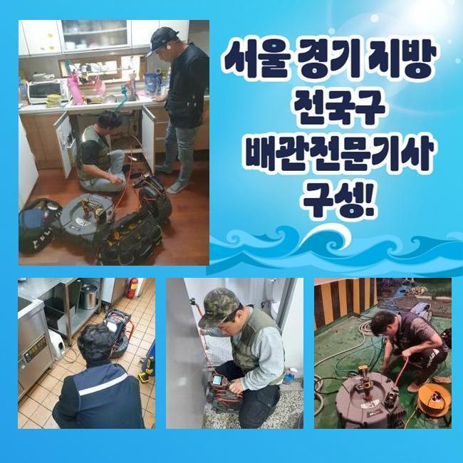
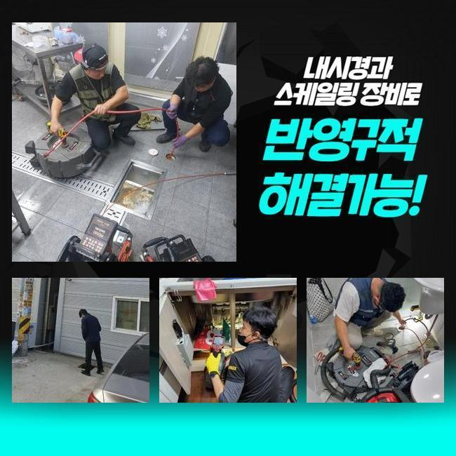
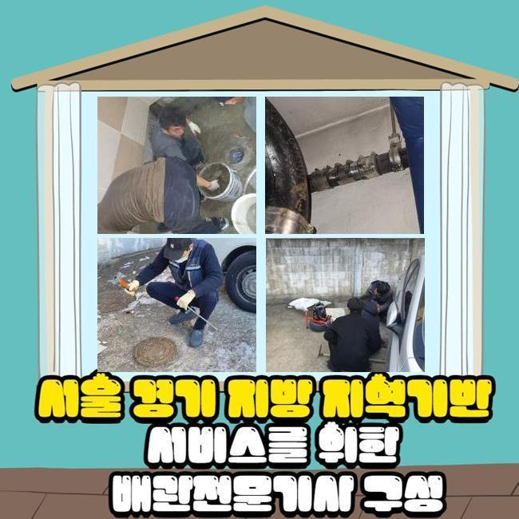

🏠 안양 박달2동변기뚫음 집수정청소 출장수리
안양 변기막힘 전문 시공 후기

📋 작업 개요
- 위치: 안양
- 서비스 유형: 변기막힘, 하수구막힘, 배관막힘, 집수정막힘, 누수수리, 역류해결, 뚫는업체, 배관청소, 설비공사, 악취차단
- 작업 일시: 2025. 1. 21. 1:02
- 업체명: 하수구수사대 (010-5615-2118)
🔍 문제 상황
안양 박달2동변기뚫음 집수정청소 출장수리
하수구의 마비가 일어나는 원인이 되는 건 여러가지인데 흘러내려간 기름기와 석회가 가장 흔하다고 말씀 드릴 수 있습니다
하수구 공사를 하고서 하수관의 봉인이나 역류가 나타난다면 시멘트나 석조 등을 원인으로 가늠을 해보는 게 정확도가 높을 것입니다
오늘의 현장에서도 작업을 하면서 다수의 막힘 원인들을 내부에서 발견할 수 있었어요
일반 집에서 막힘이 발생하고 시간이 지나면 아랫집로의 물샘 사고가 발생할 수 있으니 빠르게 움직여서 해결해야 합니다
주거지가 아닌 상업시설이라면 매출에 직결되는 심각한 상황이니만큼 더욱 신속 깔끔한 조치를 취해야 합니다
오늘 찾은 곳은 앞서 작업을 완료한 리모델링을 받고나서부터 하수구의 불통으로 고충이 어마어마하셨다고 말씀주셨어요
보통 인테리어시공이 있은 후부터 작업에 들어간 잔해들을 말끔하게 정돈하지 않거나 수로로 폐기를 하면 치명적인 막힘을 만듭니다
갖가지의 문제들로인해 배관이 고장나기도 하므로 경우의 수를 넓게 열어두고 뚫는 장비를 챙겨서 하수문제가 있는 건물로 향했습니다
고객님과 인사를 드리고 주변부를 싹 둘러봤는데 수전이 연결된 배수구의 문제가 나타난 것 같았습니다
흡입을 하는 석션으로 근처의 청소부터 시작한 뒤에 파이프라인 속의 하수 없애주기 시작했습니다
빈틈없이 막혀서 석션장치의 힘만으로는 전적인 처리가 힘들었지만 후속 조치를 하기 위해서는 내부관측을 방해하는 더러운 오염수를 걷어내주어야 한다고 판단했습니다

🔎 원인 분석
💡 전문가 진단: 정밀 진단 장비를 사용하여 슬러지의 고착 여부를 판명하고 타격/세척 작업을 실시했습니다.
하수구를 뚫어내기 위해서는 복합적인 장비 가동이 들어가야 완수할 수 있습니다
가장 기본이 되는 석션과 샤프트 기기는 필수이고 안을 명확하게 보기 위해서는 배관 내시경도 적용을 해주어야 합니다
구경이 넓은 배관이거나 깊은 위치에 있다면 힘이 뛰어난 고압청소기까지 작동시킬 수 있다보니 늘 가져다니고 있습니다
요즘은 복합적인 장비 가동이 다분화되어서 하수구 청소 작업이 그리 곤란하지 않아요
작업과 관련된 설비 지식이 없다면 장치의 제 기능을 쓰기 힘들 수 있어요
현장파악을 완수하지 못한 채 장비만 세게 돌린다면 하수구의 파손까지 첩첩산중이 될 수 있으니 배관 관측 내시경으로 하수구 정보를 다 얻고서 흡입이나 파쇄 업무를 실행해야 합니다
혼탁한 물기를 없애주고 배관 내시경을 켜서 관로 속으로 진입시켜서 탐색해 나갔습니다
예측한 바와 같이 흙먼지라거나 깨진 유리같은 것들이 빈틈없이 자리하여 통수가 차단되는 현상을 인식할 수 있었어요
내부 타일공사나 인테리어 등의 업무를 했으면 바닥 배관으로 잔여물이 내려가지 않도록 구멍으로 부터 멀리 모아두고 정돈작업을 해주는 게 필요합니다
한참 내려가다보니 하얀색 덩어리가 보였는데 인테리어 공사 중의 백시멘트 가루가 안으로 떨어졌고 뭉쳐서 응고가 된 것을 추측해 볼 수 있었습니다
아무래도 공사하고 남은 백시멘트가 유입된 듯 했어요
아주 살짝만 트여있는 상태라서 막힘이 심해보였습니다

🔧 작업 과정
지속적으로 내시경으로 안을 둘러보며 뚫는 작업을 담당해서 다치지 않게 해주었어요
샤프트로 오물들과 기름때를 절단해서 말끔히 정리해보려 계획세웠습니다
작은 파편들을 석션기로 끌어올렸더니 제법 큰 조각들이 나오더라고요
쉼 없이 해체와 석션 작업을 수행했지만 내부에 붙은 물질이 빈틈없이 딱 밀착되어 하수구 공사까지도 해야할지 모르는 사태로 몸소 느끼게 됐습니다
플렉스샤프트만 적용해서는 속 시원한 해소가 안 될 듯 하여 파이프에 데미지가 생기는 단계를 고수하면 배관이 훼손될 것 같더라고요
지면을 갈아엎고 구멍을 내어 육안으로 관로를 보고서 노선을 결정짓기로 했습니다
바닥 파손이 불가피하다고 이야기 드리고 굴착을 했습니다
안에는 백시멘트가 대형 장애물이 되어서 관로가 중단된 것 같더라고요
인테리어 절차를 거치면서 대강 처리된 미세분진들이 점차 몸집을 불려갔던 겁니다
시멘트 가루들은 건조가 빠르기 때문에 관로가 차단이 되는 문제점들이 여러 곳을 담당하다보면 여러번 목격됩니다
잘라준 파트를 하자없는 배관과 맞물리게 고정했습니다
하수관 일부를 절단할 때도 절단면이 고르게 절개를 해주어야 하며 교환작업을 거친 쪽에도 틈이 벌어지지 않아야 합니다
연결부위를 말끔히 신경쓰지 못한다면 조금씩 떨어지기 시작하거나 사이가 멀어지다가 누수로 사태가 커질 수 있습니다
배관이 흔들흔들하거나 탈거되는 일이 없도록 꼼꼼히 관로를 새 자재로 바꿔드렸습니다
내부에서 끌어올린 이물질들이 총집합을 하게 됐습니다
방대한 이물질들이 배관 통로 곳곳에 퍼져있었으니 배수가 힘들어진 것입니다
정상적인 흐름이 회복됐는지 보려고 단숨에 대량의 물을 아래로 인위적으로 붓는 방식으로 통수 테스트를 실시했는데요
우수한 작업으로 물이 끊기는 결함들이 눈 씻듯 사라진 사실을 알아차리고는 미장 작업에 착수했습니다
시멘트를 구멍 안에다 밀어넣어 배관 자리를 잡고 그 다음은 평평하고 최종마감을 해줍니다


✅ 작업 완료
누수를 막기 위한 방수 작업을 거친 후에 철거해줬던 타일 마감재를 붙여주면 끝입니다
만일 하수구를 고친 다음에 작업장소였던 바닥에 방수기능은 넣어주지 못하면 밑층으로 또 누수가 일어나는 격이니 작업 후의 복원단계도 신경써서 체크해드리고 있습니다
견고하게 양생되기까지 밟거나 이용하는 활동을 지양하시라고 알려드리고 전체 하수도 정비를 완성하게 됐습니다
건물 내 하수구문제들은 그 특성이 종잡을 수 없게 다양하지만 욕실 배수구 쪽의 문제도 흔하게 일어나서 문의를 꾸준히 주시는 부분입니다
언제든 준비되어 있으니 접수를 해주시면 차단되어 미진한 하수구 통수를 깔끔하게 해결해드리겠습니다




⚠️ 베란다 누수 및 방수 관리 방법
- ✅ 비가 많이 올 때 창틀 주변이나 아래층 천장에 얼룩이 생기는지 정기적으로 확인해 보세요.
- ✅ 우수관 주변 실리콘 마감이 들뜨거나 깨진 틈새가 있는지 손상 여부를 수시로 체크하세요.
- ✅ 베란다 바닥 타일의 줄눈(메지)이 소실되면 그 틈으로 물이 침투하여 누수가 유발됩니다.
- ✅ 누수 의심 증상 발견 시 방치하면 아래층 손실이 커지므로 즉시 전문가의 진단을 받으십시오.
💡 핵심 정리
- 확실한 장비 작업(내시경 점검 및 샤프트 스케일링)으로 원인을 뿌리 뽑습니다.
- 작업 후 1년 이내에 동일한 부위 재발 시 100% 무상 A/S 서비스를 보장합니다.
- 서울 · 경기 · 인천 전 지역에 24시간 언제든 긴급 출동할 수 있도록 항시 대기 중입니다.
❓ 자주 묻는 질문 (FAQ)
🚨 안양 변기막힘 문제로 고민이신가요?
정확한 원인 진단과 확실한 시공으로 재발 없는 해결을 약속드립니다.
24시간 긴급 출동 | 서울 · 경기 · 인천 전지역 | 1년 내 재발 시 무상 A/S